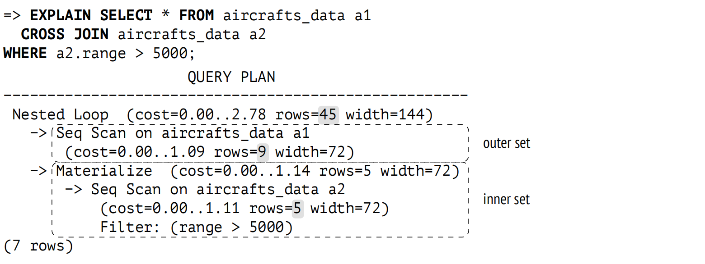
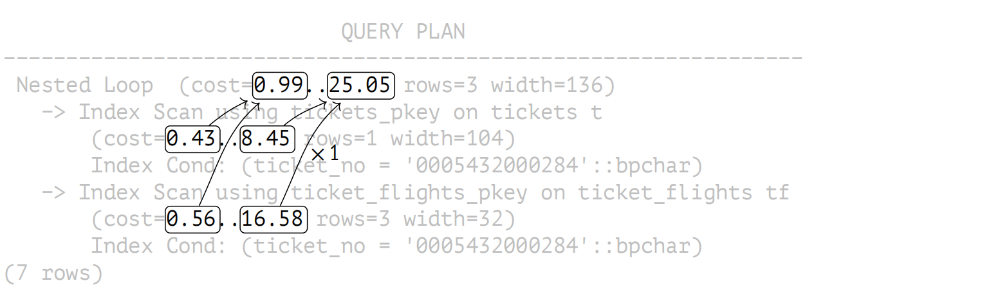
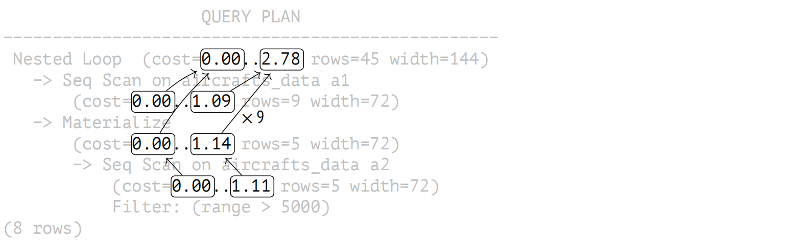

第 21 章：嵌套循环
21.1 连接类型和方式
连接是 SQL 语言的关键特性；它们是其强大和灵活的基础。行集 (直接从表中检索或作为其他操作的结果接收) 始终成对连接。
连接有几种类型：
内连接。内连接 (指定为 INNER JOIN，或简称为 JOIN) 包括两个集合中满足特定连接条件的行。连接条件将一个行集的某些列与另一个行集的某些列结合；所有涉及的列构成连接键。如果连接条件要求两个集合的连接键相等，这样的连接称为等值连接；这是最常见的连接类型。两个集合的笛卡尔积 (CROSS JOIN) 包含这些集合所有可能的行对 — 这是具有 true 条件的内连接的一种特殊情况。
外连接。左外连接 (指定为 LEFT OUTER JOIN，或简称为 LEFT JOIN) 通过左集合中那些在右集合中没有相匹配的行来扩展内连接的结果 (右集合中相应的列被填充为空值)。右外连接 (RIGHT JOIN) 也是如此，只是交换了集合的位置。全外连接 (指定为 FULL JOIN) 包括左外连接和右外连接，它将两边未找到匹配项的行都添加进来。
反连接和半连接。半连接与内连接非常相似，但它只包括左侧集合中在右侧集合中有匹配项的那些行 (即使有多个匹配项，一行也仅包含一次)。反连接包括一个集合中在另一个集合中没有匹配项的行。SQL 语言没有明确的半连接和反连接，但可以使用像 EXISTS 和 NOT EXISTS 这样的谓词达到相同的结果。
所有这些连接都是逻辑操作。例如，内连接通常被描述为一个已清理不满足连接条件的行的笛卡尔积。但在物理层面，内连接通常是通过成本更低的方式实现的。
PostgreSQL 提供了多种连接方式：
- 嵌套循环连接
- 哈希连接
- 归并连接
连接方法是实现 SQL 连接逻辑操作的算法。这些基本算法经常有针对特定连接类型的特殊变体，尽管它们可能只支持其中一些。例如，嵌套循环支持内连接 (在计划中由 Nested Loop 节点表示) 和左外连接(由 Nested Loop Left Join 节点表示) ，但它不能用于全外连接。
同一算法的一些变体也可以被其他操作使用，如聚合。
不同的连接方法在不同条件下效果最佳；规划器的工作就是选择成本效益最高的连接方法。
21.2 嵌套循环连接
嵌套循环连接的基本算法如下。外循环遍历第一个集合中 (称为外集合) 所有的行。对于每一行，嵌套循环遍历第二个集合中 (称为内集合) 的行，以找到满足连接条件的行。每个找到的连接对作为查询结果的一部分立即返回。1
此算法访问内集合的次数与外集合中的行数一样多。因此，嵌套循环连接的效率取决于几个因素：
- 外集合中行的基数
- 可用的访问方法，可以有效获取内集合中所需的行
- 循环访问内集合中的同一行
21.2.1 笛卡尔积
无论集合中的行数如何，嵌套循环连接都是查找笛卡尔积最有效的方式：
嵌套循环节点使用上述算法进行连接。它总是有两个子节点：计划中显示较高的节点对应于外集合，而较低的节点代表内集合。
在此例中，内集合由 Materialize 节点 2 表示。此节点返回从其子节点接收到的行，并保存它们以备将来使用 (这些行在内存中累积，直到它们的总大小达到 work_mem；然后 PostgreSQL 会将它们溢出到磁盘上的临时文件中)。如果再次访问，节点读取所累积的行而无需调用子节点。这样执行器就可以避免再次扫描全表，只读取满足条件的行即可。
对于使用常规等值连接的查询，也可以构建类似的计划：
=> EXPLAIN SELECT *
FROM tickets t
JOIN ticket_flights tf ON tf.ticket_no = t.ticket_no
WHERE t.ticket_no = '0005432000284';
QUERY PLAN
−−−−−−−−−−−−−−−−−−−−−−−−−−−−−−−−−−−−−−−−−−−−−−−−−−−−−−−−−−−−−−−−
Nested Loop (cost=0.99..25.05 rows=3 width=136)
−> Index Scan using tickets_pkey on tickets t
(cost=0.43..8.45 rows=1 width=104)
Index Cond: (ticket_no = '0005432000284'::bpchar)
−> Index Scan using ticket_flights_pkey on ticket_flights tf
(cost=0.56..16.58 rows=3 width=32)
Index Cond: (ticket_no = '0005432000284'::bpchar)
(7 rows)在识别两个值相等之后，规划器将连接条件 tf.ticket_no = t.ticket_no 替换为 tf.ticket_no = constant 的条件，这实际上将等值连接简化为了笛卡尔积。3
基数估算。笛卡尔积的基数预估为所连接数据集的基数乘积：3 = 1 × 3。
代价估算。连接操作的启动成本包括了所有子节点的启动成本。
连接的全部成本包括以下部分：
- 获取外集合中所有行的成本
- 单次检索内集合中所有行的成本 (因为外集合的基数预估等于 1)
- 处理要返回的每一行的成本
此处是成本估算的依赖图：
连接的成本计算如下：
=> SELECT 0.43 + 0.56 AS startup_cost,
round((
8.45 + 16.57 +
3 * current_setting('cpu_tuple_cost')::real
)::numeric, 2) AS total_cost;
startup_cost | total_cost
−−−−−−−−−−−−−−+−−−−−−−−−−−−
0.99 | 25.05
(1 row)现在让我们回到之前的例子：
=> EXPLAIN SELECT *
FROM aircrafts_data a1
CROSS JOIN aircrafts_data a2
WHERE a2.range > 5000;
QUERY PLAN
−−−−−−−−−−−−−−−−−−−−−−−−−−−−−−−−−−−−−−−−−−−−−−−−−−−−−
Nested Loop (cost=0.00..2.78 rows=45 width=144)
−> Seq Scan on aircrafts_data a1
(cost=0.00..1.09 rows=9 width=72)
−> Materialize (cost=0.00..1.14 rows=5 width=72)
−> Seq Scan on aircrafts_data a2
(cost=0.00..1.11 rows=5 width=72)
Filter: (range > 5000)
(7 rows)现在计划中包含了 Materialize 节点；在累积了从子节点接收到的行之后，Materialize 就能在所有后续调用中更快地返回它们。
总的来说，连接的总成本包括以下：4
- 获取外集合中所有行的成本
- 内集合中所有行的初始获取成本 (在此期间执行物化)
- 内集合中行重复获取成本的 (N-1) 倍 (此处 N 是外集合的行数)
- 处理要返回的每一行的成本
此处的依赖图如下：
在这个例子中，物化降低了重复获取数据的成本。计划中显示了第一次 Materialize 调用的成本，但没有列出所有后续的调用情况。我不会在此处提供任何计算说明，5 但在此特例下，估算值是 0.0125。
因此，这个例子中执行的连接成本计算如下：
=> SELECT 0.00 + 0.00 AS startup_cost,
round((
1.09 + (1.14 + 8 * 0.0125) +
45 * current_setting('cpu_tuple_cost')::real
)::numeric, 2) AS total_cost;
startup_cost | total_cost
−−−−−−−−−−−−−−+−−−−−−−−−−−−
0.00 | 2.78
(1 row)21.2.2 参数化连接
现在让我们考虑一个更常见的例子，它不能归结为笛卡尔积：
=> CREATE INDEX ON tickets(book_ref);
=> EXPLAIN SELECT *
FROM tickets t
JOIN ticket_flights tf ON tf.ticket_no = t.ticket_no
WHERE t.book_ref = '03A76D';
QUERY PLAN
−−−−−−−−−−−−−−−−−−−−−−−−−−−−−−−−−−−−−−−−−−−−−−−−−−−−−−−−−−−−−−−−
Nested Loop (cost=0.99..45.68 rows=6 width=136)
−> Index Scan using tickets_book_ref_idx on tickets t
(cost=0.43..12.46 rows=2 width=104)
Index Cond: (book_ref = '03A76D'::bpchar)
−> Index Scan using ticket_flights_pkey on ticket_flights tf
(cost=0.56..16.58 rows=3 width=32)
Index Cond: (ticket_no = t.ticket_no)
(7 rows)此处，Nested Loop 节点遍历外集合中 (tickets) 的行，对于其中的每一行，都会搜索内集合中 (flights) 相应的行，同时将票号作为参数 (t.ticket_no) 传递给条件。当调用内部节点 (Index Scan) 时，必须要处理条件 ticket_no = constant。
基数估算。规划器预估外集合中有两行 (rows=2) 满足按预订号过滤的条件，并且每行平均匹配内集合中的三行 (rows=3)。
连接选择率是连接后剩余的两个集合的笛卡尔积的一部分。显然，我们必须排除两个集合中连接键中包含空值的行，因为它们永远不会满足等值条件。
预估基数等于笛卡尔积的基数 (即两个集合基数的乘积) 乘以选择率。6
此处第一个 (外) 集合的预估基数是两行。由于除了连接条件自身外，没有条件应用于第二个 (内) 集合，因此第二个集合的基数为 ticket_flights 表的基数。
由于连接的表通过外键连接，因此选择率的估算依赖于子表中的每一行恰好在父表中有一个匹配行的事实。因此，选择率被视为外键引用的表大小的倒数。7
这样的话，对于 ticket_no 列不包含空值的情况，估算如下：
=> SELECT round(2 * tf.reltuples * (1.0 / t.reltuples)) AS rows
FROM pg_class t, pg_class tf
WHERE t.relname = 'tickets'
AND tf.relname = 'ticket_flights';
rows
−−−−−−
6
(1 row)显然，不使用外键也可以连接表。那么选择率将取自特定连接条件的预估选择率。8
对于这个例子中的等值连接，假设值均匀分布，选择率估算的通用公式如下：$\min \left( \frac{1}{n d_1}, \frac{1}{n d_2} \right)$，其中 nd1 和 nd2 分别表示第一个集合和第二个集合中连接键不同值的数量。9
非重复值的统计信息显示 tickets 表中的票号是唯一的 (这是意料之中的，因为 ticket_no 列是主键)，并且 ticket_flights 中每张票大约有三个匹配行：
=> SELECT t.n_distinct, tf.n_distinct
FROM pg_stats t, pg_stats tf
WHERE t.tablename = 'tickets' AND t.attname = 'ticket_no'
AND tf.tablename = 'ticket_flights' AND tf.attname = 'ticket_no';
n_distinct | n_distinct
−−−−−−−−−−−−+−−−−−−−−−−−−−
−1 | −0.30362356
(1 row)结果将与外键连接的估算值相匹配：
=> SELECT round(2 * tf.reltuples *
least(1.0/t.reltuples, 1.0/tf.reltuples/0.30362356)
) AS rows
FROM pg_class t, pg_class tf
WHERE t.relname = 'tickets' AND tf.relname = 'ticket_flights';
rows
−−−−−−
6
(1 row)规划器会尽可能尝试改进此基线预估。目前它还不能使用直方图，但如果两个表的连接键上收集了 MCV 列表这类统计信息，那么规划器会考虑这些信息。10 列表中出现的行的选择率可以更准确地估算，而剩余的行将不得不依赖于基于均匀分布的假设进行计算。
通常情况下，如果定义了外键，连接选择率的估算可能会更准确。对于复合连接键更是如此，因为在这种情况下，选择率通常都被大大低估了。
使用 EXPLAIN ANALYZE 命令，不仅可以查看到实际的行数，还可以看到内循环被执行的次数：
=> EXPLAIN (analyze, timing off, summary off) SELECT *
FROM tickets t
JOIN ticket_flights tf ON tf.ticket_no = t.ticket_no
WHERE t.book_ref = '03A76D';
QUERY PLAN
−−−−−−−−−−−−−−−−−−−−−−−−−−−−−−−−−−−−−−−−−−−−−−−−−−−−−−−−−−−−−−−−−−−
Nested Loop (cost=0.99..45.68 rows=6 width=136)
(actual rows=8 loops=1)
−> Index Scan using tickets_book_ref_idx on tickets t
(cost=0.43..12.46 rows=2 width=104) (actual rows=2 loops=1)
Index Cond: (book_ref = '03A76D'::bpchar)
−> Index Scan using ticket_flights_pkey on ticket_flights tf
(cost=0.56..16.58 rows=3 width=32) (actual rows=4 loops=2)
Index Cond: (ticket_no = t.ticket_no)
(8 rows)外集合包含两行 (actual rows=2)；估算是正确的。所以 Index Scan节点执行了两次 (loops=2)，每次平均选取了四行 (actual rows=4) 。因此找到的总行数是：actual rows=8。
为了让输出适应页面的有限宽度，我没有显示计划的每个阶段的执行时间 (TIMING OFF)；此外，在某些平台上，启用计时的输出可能会显著减慢查询的执行速度。但如果我们确实包括了它，PostgreSQL 会显示一个平均值，就像行数一样。要获取总执行时间，你需要将此值乘以迭代次数 (loops)。
成本估算。此处的成本估算公式与之前的示例相同。
让我们回顾一下查询计划：
=> EXPLAIN SELECT *
FROM tickets t
JOIN ticket_flights tf ON tf.ticket_no = t.ticket_no
WHERE t.book_ref = '03A76D';
QUERY PLAN
−−−−−−−−−−−−−−−−−−−−−−−−−−−−−−−−−−−−−−−−−−−−−−−−−−−−−−−−−−−−−−−−
Nested Loop (cost=0.99..45.68 rows=6 width=136)
−> Index Scan using tickets_book_ref_idx on tickets t
(cost=0.43..12.46 rows=2 width=104)
Index Cond: (book_ref = '03A76D'::bpchar)
−> Index Scan using ticket_flights_pkey on ticket_flights tf
(cost=0.56..16.58 rows=3 width=32)
Index Cond: (ticket_no = t.ticket_no)
(7 rows)在这种情况下，内集合每次后续扫描的成本与第一次扫描的成本相同。因此，我们最终得到以下数据：
=> SELECT 0.43 + 0.56 AS startup_cost,
round((
12.46 + 2 * 16.57 +
6 * current_setting('cpu_tuple_cost')::real
)::numeric, 2) AS total_cost;
startup_cost | total_cost
−−−−−−−−−−−−−−+−−−−−−−−−−−−
0.99 | 45.66
(1 row)21.2.3 缓存行 (Memoization)
如果使用相同的参数值重复扫描内集合 (从而给出相同的结果)，那么缓存该集合的行可能会有益。
此类缓存由 Memoize 11 节点执行。与 Materialize 节点类似，旨在处理参数化连接，并且具有更复杂的实现：
- Materialize 节点只是简单地保存所有子节点返回的行，而 Memoize 则确保不同参数值返回的行分开保存。
- 在发生溢出的情况下，Materialize 存储开始将行溢出到磁盘，而 Memoize 会将所有行保留在内存中 (否则缓存就没有意义了)。
此处是一个使用 Memoize 的查询示例：
=> EXPLAIN SELECT *
FROM flights f
JOIN aircrafts_data a ON f.aircraft_code = a.aircraft_code
WHERE f.flight_no = 'PG0003';
QUERY PLAN
−−−−−−−−−−−−−−−−−−−−−−−−−−−−−−−−−−−−−−−−−−−−−−−−−−−−−−−−−−−−−−−−−−−−−
Nested Loop (cost=5.44..387.10 rows=113 width=135)
−> Bitmap Heap Scan on flights f
(cost=5.30..382.22 rows=113 width=63)
Recheck Cond: (flight_no = 'PG0003'::bpchar)
−> Bitmap Index Scan on flights_flight_no_scheduled_depart...
(cost=0.00..5.27 rows=113 width=0)
Index Cond: (flight_no = 'PG0003'::bpchar)
−> Memoize (cost=0.15..0.27 rows=1 width=72)
Cache Key: f.aircraft_code
Cache Mode: logical
−> Index Scan using aircrafts_pkey on aircrafts_data a
(cost=0.14..0.26 rows=1 width=72)
Index Cond: (aircraft_code = f.aircraft_code)
(13 rows)用于存储缓存行的内存块大小等于 work_mem × hash_mem_multiplier。正如第二个参数名所暗示的那样，缓存行存储在哈希表中 (使用开放寻址) 12。哈希键 (在计划中显示为 Cache Key) 是参数值 (如果不止一个参数，则为多个值)。
所有哈希键绑定到一个列表中；其一端被认为是冷的 (因为它包含长时间未使用的键)，而另一端是热的 (它存储最近使用的键)。
如果对 Memoize 节点的调用显示传递的参数值对应于已缓存的行，那么这些行将被传递到父节点 (嵌套循环) 而无需检查子节点。然后使用过的哈希键被移动到列表的热端。
如果缓存中不包含所需的行，Memoize 节点将从其子节点中提取并缓存它们，然后传递给上层节点。相应的哈希键也会变热。
随着新数据被缓存，它可以填满所有可用的内存。为了释放一些空间，对应于冷键的行会被逐出。该逐出算法不同于缓冲区缓存中使用的算法，但目的相同。
某些参数值可能有太多匹配的行，即使所有其他行都已被逐出也不适合所分配的内存块。这样的参数会被跳过 — 只缓存一些行是没有意义的，因为下一次调用仍然必须从子节点获取所有的行。
成本和基数估算。这些计算与我们上面已看到的十分相似。我们只需要记住，计划中显示的 Memoize 节点的成本与其实际成本无关：它只是其子节点的成本增加了 cpu_tuple_cost 的值。13
对于 Materialize 节点，我们已经遇到过类似的情况：它的成本仅为后续扫描进行计算 14，且不会反映在计划中。
显然，只有当 Memoize 比其子节点成本更低时，才有意义使用。每次后续 Memoize 扫描的成本取决于预期的缓存访问概况以及可用于缓存的内存块大小。计算值在很大程度上取决于对扫描内层数据集时使用的不同参数值数量的准确估算。15 基于这个数字，你可以权衡行被缓存和从缓存中逐出的概率。预期的命中降低了估算成本，而潜在的逐出增加了成本。在此处我们将跳过这些计算细节。
为了弄清楚查询执行期间实际发生了什么，我们将像往常一样使用 EXPLAIN ANALYZE 命令：
=> EXPLAIN (analyze, costs off, timing off, summary off)
SELECT * FROM flights f
JOIN aircrafts_data a ON f.aircraft_code = a.aircraft_code
WHERE f.flight_no = 'PG0003';
QUERY PLAN
−−−−−−−−−−−−−−−−−−−−−−−−−−−−−−−−−−−−−−−−−−−−−−−−−−−−−−−−−−−−−−−−−−−−−
Nested Loop (actual rows=113 loops=1)
−> Bitmap Heap Scan on flights f
(actual rows=113 loops=1)
Recheck Cond: (flight_no = 'PG0003'::bpchar)
Heap Blocks: exact=2
−> Bitmap Index Scan on flights_flight_no_scheduled_depart...
(actual rows=113 loops=1)
Index Cond: (flight_no = 'PG0003'::bpchar)
−> Memoize (actual rows=1 loops=113)
Cache Key: f.aircraft_code
Cache Mode: logical
Hits: 112 Misses: 1 Evictions: 0 Overflows: 0 Memory
Usage: 1kB
−> Index Scan using aircrafts_pkey on aircrafts_data a
(actual rows=1 loops=1)
Index Cond: (aircraft_code = f.aircraft_code)
(16 rows)该查询选择沿相同航线并由特定类型的飞机执飞的航班，因此所有 Memoize 节点上的调用都使用相同的哈希键。第一行必须从表中获取第 (Misses: 1)，但后续所有的行都在缓存中找到 (Hits: 112)。整个操作只需要 1 kB 的内存。
其他两个显示的值为零：它们代表逐出的次数和由于无法缓存与特定参数集相关的所有行时发生的缓存溢出次数。较大的数字表示分配的缓存太小，这可能是由于对不同参数值的数量预估不准确造成的。那么使用 Memoize 节点可能会非常昂贵。在极端情况下，你可以通过关闭 enable_memoize 参数来禁止规划器使用缓存。
21.2.4 外连接
嵌套循环连接可用于执行左外连接：
=> EXPLAIN SELECT *
FROM ticket_flights tf
LEFT JOIN boarding_passes bp ON bp.ticket_no = tf.ticket_no
AND bp.flight_id = tf.flight_id
WHERE tf.ticket_no = '0005434026720';
QUERY PLAN
−−−−−−−−−−−−−−−−−−−−−−−−−−−−−−−−−−−−−−−−−−−−−−−−−−−−−−−−−−−−−−−−−−−−−
Nested Loop Left Join (cost=1.12..33.35 rows=3 width=57)
Join Filter: ((bp.ticket_no = tf.ticket_no) AND (bp.flight_id =
tf.flight_id))
−> Index Scan using ticket_flights_pkey on ticket_flights tf
(cost=0.56..16.58 rows=3 width=32)
Index Cond: (ticket_no = '0005434026720'::bpchar)
−> Materialize (cost=0.56..16.62 rows=3 width=25)
−> Index Scan using boarding_passes_pkey on boarding_passe...
(cost=0.56..16.61 rows=3 width=25)
Index Cond: (ticket_no = '0005434026720'::bpchar)
(10 rows)此处连接操作由 Nested Loop Left Join 节点表示。规划器选择了一个带有过滤条件的非参数化连接：它对内层数据集执行相同的扫描 (因此该集合隐藏在 Materialize 节点后面) 并返回满足过滤条件 (Join Filter) 的行。
外连接的基数预估与内连接的基数一样，只是计算出来的预估值是和外层数据集的基数比较，并取较大值作为最终结果。16 换句话说，外连接永远不会减少行数 (但可以增加)。
成本估算与内连接类似。
我们还需记住，规划器可以为内连接和外连接选择不同的计划。如果规划器被迫使用嵌套循环连接，那么即使是这个简单的示例也会有不同的连接过滤条件：
=> SET enable_mergejoin = off;
=> EXPLAIN SELECT *
FROM ticket_flights tf
JOIN boarding_passes bp ON bp.ticket_no = tf.ticket_no
AND bp.flight_id = tf.flight_id
WHERE tf.ticket_no = '0005434026720';
QUERY PLAN
−−−−−−−−−−−−−−−−−−−−−−−−−−−−−−−−−−−−−−−−−−−−−−−−−−−−−−−−−−−−−−−−−−−−−
Nested Loop (cost=1.12..33.33 rows=3 width=57)
Join Filter: (tf.flight_id = bp.flight_id)
−> Index Scan using ticket_flights_pkey on ticket_flights tf
(cost=0.56..16.58 rows=3 width=32)
Index Cond: (ticket_no = '0005434026720'::bpchar)
−> Materialize (cost=0.56..16.62 rows=3 width=25)
−> Index Scan using boarding_passes_pkey on boarding_passe...
(cost=0.56..16.61 rows=3 width=25)
Index Cond: (ticket_no = '0005434026720'::bpchar)
(9 rows)
=> RESET enable_mergejoin;总成本略有不同的原因是，如果外层数据集中没有匹配项，外连接还必须检查票号以获得正确的结果。
不支持右外连接，17 因为嵌套循环算法以不同方式处理内集合和外集合。外集合被完整扫描；至于内集合，索引访问只允许读取那些满足连接条件的行，因此可能完全跳过其中的一些行。
出于同样的原因，也不支持全外连接。
21.2.5 反连接和半连接
反连接和半连接在某种意义上是相似的，对于第一个 (外) 集合的每一行，只需在第二个 (内) 集合中找到一个匹配项就足够了。
反连接只有在第二个数据集中没有匹配项的情况下才返回第一个数据集中的行：一旦执行器在第二个数据集中找到了第一个匹配的行，它就可以退出当前循环：第一个数据集中相应的行必须从结果中排除。
反连接可用于计算 NOT EXISTS 谓词。
例如，让我们查找未定义机舱配置的机型。对应的计划包含 Nested Loop Anti Join 节点：
=> EXPLAIN SELECT *
FROM aircrafts a
WHERE NOT EXISTS (
SELECT * FROM seats s WHERE s.aircraft_code = a.aircraft_code
);
QUERY PLAN
−−−−−−−−−−−−−−−−−−−−−−−−−−−−−−−−−−−−−−−−−−−−−−−−−−−−−−−−−−−−−−−−−−−−−
Nested Loop Anti Join (cost=0.28..4.65 rows=1 width=40)
−> Seq Scan on aircrafts_data ml (cost=0.00..1.09 rows=9 widt...
−> Index Only Scan using seats_pkey on seats s
(cost=0.28..5.55 rows=149 width=4)
Index Cond: (aircraft_code = ml.aircraft_code)
(5 rows)一个没有 NOT EXISTS 谓词的替代查询含有相同的计划：
=> EXPLAIN SELECT a.*
FROM aircrafts a
LEFT JOIN seats s ON a.aircraft_code = s.aircraft_code
WHERE s.aircraft_code IS NULL;
QUERY PLAN
−−−−−−−−−−−−−−−−−−−−−−−−−−−−−−−−−−−−−−−−−−−−−−−−−−−−−−−−−−−−−−−−−−−−−
Nested Loop Anti Join (cost=0.28..4.65 rows=1 width=40)
−> Seq Scan on aircrafts_data ml (cost=0.00..1.09 rows=9 widt...
−> Index Only Scan using seats_pkey on seats s
(cost=0.28..5.55 rows=149 width=4)
Index Cond: (aircraft_code = ml.aircraft_code)
(5 rows)半连接会返回第一个数据集中至少在第二个数据集中有一条匹配项的行 (同样，也无需检查数据集中是否有其他匹配项 — 结果已经知道了)。
半连接可用于计算 EXISTS 谓词。让我们找出机舱内装有座椅的机型：
=> EXPLAIN SELECT *
FROM aircrafts a
WHERE EXISTS (
SELECT * FROM seats s
WHERE s.aircraft_code = a.aircraft_code
);
QUERY PLAN
−−−−−−−−−−−−−−−−−−−−−−−−−−−−−−−−−−−−−−−−−−−−−−−−−−−−−−−−−−−−−−−−−−−−−
Nested Loop Semi Join (cost=0.28..6.67 rows=9 width=40)
−> Seq Scan on aircrafts_data ml (cost=0.00..1.09 rows=9 widt...
−> Index Only Scan using seats_pkey on seats s
(cost=0.28..5.55 rows=149 width=4)
Index Cond: (aircraft_code = ml.aircraft_code)
(5 rows)Nested Loop Semi Join 节点表示同名连接方法。该计划 (就像上面的反连接一样) 提供了 seats 表中行数的基本预估值 (rows=149)，尽管只检索其中一个就足够了。当然，实际的查询执行在获取第一行后停止：
=> EXPLAIN (analyze, costs off, timing off, summary off)
SELECT * FROM aircrafts a
WHERE EXISTS (
SELECT * FROM seats s
WHERE s.aircraft_code = a.aircraft_code
);
QUERY PLAN
−−−−−−−−−−−−−−−−−−−−−−−−−−−−−−−−−−−−−−−−−−−−−−−−−−−−−−−−−−−−
Nested Loop Semi Join (actual rows=9 loops=1)
−> Seq Scan on aircrafts_data ml (actual rows=9 loops=1)
−> Index Only Scan using seats_pkey on seats s
(actual rows=1 loops=9)
Index Cond: (aircraft_code = ml.aircraft_code)
Heap Fetches: 0
(6 rows)基数估算。半连接的选择率以往常的方式进行估算，除了内集合的基数取 1。对于反连接，预估选择率从 1 中减去，就像取否操作一样。18
成本估算。对于反连接和半连接，成本估算反映了这样一个事实：一旦找到第一个匹配的行，对于第二个数据集的扫描就会停止。19
21.2.6 非等值连接
嵌套循环算法允许根据任何连接条件进行连接。
显然，如果内集合是一个创建了索引的基础表，并且连接条件使用了属于该索引操作符类的操作符，那么对内集合的访问会非常高效。但是始终可以通过计算按某些条件过滤后的行的笛卡尔积来执行连接 — 在这种情况下，该条件可以是任意的。就像下面的查询一样，它选择了彼此靠近的机场：
=> CREATE EXTENSION earthdistance CASCADE;
=> EXPLAIN (costs off) SELECT *
FROM airports a1
JOIN airports a2 ON a1.airport_code != a2.airport_code
AND a1.coordinates <@> a2.coordinates < 100;
QUERY PLAN
−−−−−−−−−−−−−−−−−−−−−−−−−−−−−−−−−−−−−−−−−−−−−−−−−−−−−−−−−−−−−−−−−−−−−
Nested Loop
Join Filter: ((ml.airport_code <> ml_1.airport_code) AND
((ml.coordinates <@> ml_1.coordinates) < '100'::double precisi...
−> Seq Scan on airports_data ml
−> Materialize
−> Seq Scan on airports_data ml_1
(6 rows)21.2.7 并行模式
嵌套循环连接可以参与并行计划的执行。20
只有外集合可以并行处理，因为它可以由多个工作进程同时扫描。获取了外部行之后，每个工作进程必须顺序地搜索内集合中的匹配行。
下面显示的查询包括多个连接；它搜索持有特定航班机票的乘客：
=> EXPLAIN (costs off) SELECT t.passenger_name
FROM tickets t
JOIN ticket_flights tf ON tf.ticket_no = t.ticket_no
JOIN flights f ON f.flight_id = tf.flight_id
WHERE f.flight_id = 12345;
QUERY PLAN
−−−−−−−−−−−−−−−−−−−−−−−−−−−−−−−−−−−−−−−−−−−−−−−−−−−−−−−−−−−−−−−−−−−−−
Nested Loop
−> Index Only Scan using flights_flight_id_status_idx on fligh...
Index Cond: (flight_id = 12345)
−> Gather
Workers Planned: 2
−> Nested Loop
−> Parallel Seq Scan on ticket_flights tf
Filter: (flight_id = 12345)
−> Index Scan using tickets_pkey on tickets t
Index Cond: (ticket_no = tf.ticket_no)
(10 rows)在上层，嵌套循环连接顺序执行。外集合由 flights 表中通过唯一键获取的单行组成，因此即使内集合行数较多，使用嵌套循环也是合理的。
内集合的检索使用了并行计划。每个工作进程扫描 ticket_flights 表中属于自己份额的行，并使用嵌套循环算法将它们与 tickets 连接起来。
-
backend/executor/nodeNestloop.c ↩︎
-
backend/executor/nodeMaterial.c ↩︎
-
backend/optimizer/path/equivclass.c ↩︎
-
backend/optimizer/path/costsize.c, initial_cost_nestloop andfinal_cost_nestloop function ↩︎
-
backend/optimizer/path/costsize.c, cost_rescan function ↩︎
-
backend/optimizer/path/costsize.c, calc_joinrel_size_estimate function ↩︎
-
backend/optimizer/path/costsize.c, get_foreign_key_join_selectivity function ↩︎
-
backend/optimizer/path/clausesel.c, clauselist_selectivity function ↩︎
-
backend/utils/adt/selfuncs.c, eqjoinsel function ↩︎
-
backend/utils/adt/selfuncs.c, eqjoinsel function ↩︎
-
backend/executor/nodeMemoize.c ↩︎
-
include/lib/simplehash.h ↩︎
-
backend/optimizer/util/pathnode.c, create_memoize_path function ↩︎
-
backend/optimizer/path/costsize.c, cost_memoize_rescan function ↩︎
-
backend/utils/adt/selfuncs.c, estimate_num_groups function ↩︎
-
backend/optimizer/path/costsize.c, calc_joinrel_size_estimate function ↩︎
-
backend/optimizer/path/joinpath.c, match_unsorted_outer function ↩︎
-
backend/optimizer/path/costsize.c, calc_joinrel_size_estimate function ↩︎
-
backend/optimizer/path/costsize.c, final_cost_nestloop function ↩︎
-
backend/optimizer/path/joinpath.c, consider_parallel_nestloop function ↩︎